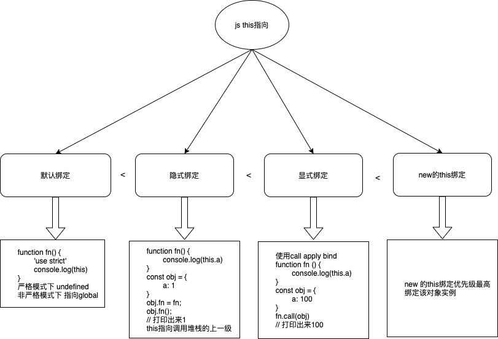

this问题总结
- ES6 的模块自动采用严格模式，不管你有没有在模块头部加上”use strict”;。
- 严格模式主要有以下限制。
- 变量必须声明后再使用
- 函数的参数不能有同名属性，否则报错
- 不能使用with语句
- 不能对只读属性赋值，否则报错
- 不能使用前缀0表示八进制数，否则报错
- 不能删除不可删除的属性，否则报错
- 不能删除变量delete prop，会报错，只能删除属性delete global[prop]
- eval不会在它的外层作用域引入变量
- eval和arguments不能被重新赋值
- arguments不会自动反映函数参数的变化
- 不能使用arguments.callee
- 不能使用arguments.caller
- 禁止this指向全局对象
- 不能使用fn.caller和fn.arguments获取函数调用的堆栈
- 增加了保留字（比如protected、static和interface）

默认绑定（函数直接调用）
1 | function fn() { |
严格模式下：
1 | function fn() { |
1 | var a = 1; |
1 | const obj = { |
隐式绑定（属性访问调用）
隐式绑定的this指的是调用堆栈的上一级（.前面一个）
1 | function fn() { |
1 | function fn() { |
- 边界情况，比如隐式绑定失效：
1
2
3
4
5
6
7
8
9
10
11
12
13
14
15
16
17
18
19
20
21
22
23
24
25
26
27
28
29
30
31
32
33
34
35
36// 第一种
const obj1 = {
a: 1,
fn: function() {
console.log(this.a);
}
}
const fn1 = obj1.fn;
fn1();
// 赋值丢失this
// 第二种 setTimeout
setTImeout(obj1.fn, 1000);
// 第三种 函数作为参数传递
function run(fn) {
fn();
}
run(obj1.fn);
// 第四种 一般匿名函数也是会指向全局的
var name = 'The Window';
var obj = {
name: 'My obj',
getName: function() {
return function() { // 这是一个匿名函数
console.log(this.name);
}
}
}
obj.getName()();
// 第五种 函数赋值也会改变this指向，这也是react中事件处理函数为啥要bind一下的原因
// 第六种
// IIFE(立即调用函数表达式)
显示绑定（call、bind、apply）
通过显式的一些方法去强行的绑定this上下文
call
1
2
3
4
5
6
7
8function fn() {
console.log(this.a);
}
const obj = {
a: 100
}
fn.call(obj);
// 打印出来100bind
1
2
3
4
5
6
7function fn() {
console.log(this);
}
// 为啥可以绑定基本类型？
// boxing(装箱) -> (1 ----> Number(1))
// bind只看第一个bind（堆栈的上下文，上一个，写的顺序来看就是第一个）
fn.bind(1).bind(2)();JS中的bind的实现 from MDN
1
2
3
4
5
6
7
8
9
10
11
12
13
14
15
16
17
18
19
20
21
22
23
24
25
26
27
28
29
30
31
32
33
34
35
36
37
38
39
40// Yes, it does work with `new (funcA.bind(thisArg, args))`
// 如果bind没有 则执行一个立即执行函数
if (!Function.prototype.bind) (function(){
// 赋值暂存slice方便后面调用
var ArrayPrototypeSlice = Array.prototype.slice;
// 声明函数bind 取到bind的绑定的指针otherThis fn.bind(theThis, args);
Function.prototype.bind = function(otherThis) {
// 如果this 如fn的类型不是一个function 直接抛出错误
if (typeof this !== 'function') {
// closest thing possible to the ECMAScript 5
// internal IsCallable function
throw new TypeError('Function.prototype.bind - what is trying to be bound is not callable');
}
// 去掉第一个参数 第一个参数时theThis 赋值到baseArgs
// baseArgsLength取长度
// fToBind赋值this
// FNOP空函数
var baseArgs= ArrayPrototypeSlice.call(arguments, 1),
baseArgsLength = baseArgs.length,
fToBind = this,
fNOP = function() {},
fBound = function() {
baseArgs.length = baseArgsLength; // reset to default base arguments
// apply baseArgs , baseArgs.push(arguments)
baseArgs.push.apply(baseArgs, arguments);
// 如果this的原型时function 则返回this 否则 返回otherThis
return fToBind.apply(
fNOP.prototype.isPrototypeOf(this) ? this : otherThis, baseArgs
);
};
if (this.prototype) {
// Function.prototype doesn't have a prototype property
fNOP.prototype = this.prototype;
}
fBound.prototype = new fNOP();
return fBound;
};
})();
new
实现new
1 | /** |
箭头函数
箭头函数这种情况比较特殊，编译期间确定的上下文，不会被改变，哪怕你new，指向的就是上一层的上下文。
- 箭头函数本身是没有this的，继承的是外层的this指向
this指向优先级
1 | // 隐式 vs 默认 -> 结论：隐式 > 默认 |
new > 显式（bind, call, apply） > 隐式(obj.fn) > 默认